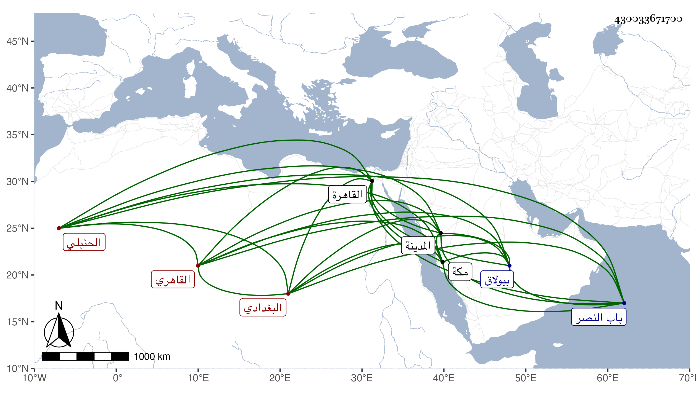

0902Sakhawi.DawLamic.ITO20230111-ara1.EIS1600.430033671700
Biography ID: 430033671700
336
محمد بن محمد بن عبد المنعم بن داود بن سليمان البدر أبو المحاسن بن البدر أبي عبد الله بن الشرف أبي المكارم البغدادي الأصل القاهري الحنبلي الماضي أبوه وجده والآتي ولده الشرف محمد . ولد بالقاهرة في جمادى الأولى سنة إحدى وثمانمائة وأمه هي ابنة أخي الفقيه برهان الدين بن الصواف الحنبلي . ونشأ فحفظ القرآن وتلاه كما أخبر لكل من أبي عمرو ونافع وحمزة علي حبيب والشمس الشراريبي وحفظ الخرقي وغيره وعرض ثم أخذ في الفقه عن زوج أمه الفتح الباهي والعلاء بن مغلى ولكن جل انتفاعه إنما كان بالمحب بن نصر الله وقال أنه اشتغل في النحو على الشموس الثلاثة البوصيري والشطنوفي وابن هشام العجيمي والبدر الدماميني وكذا أخذ عن العز عبد السلام البغدادي وطلب الحديث فقرأ صحيح البخاري على شيخه المحب وصحيح مسلم والشفا معا على الشرف بن الكويك وسمع عليه غير ذلك وكذا سمع على الجمال عبد الله والشمس الشامي الحنبليين والكمال بن خير والشهاب الواسطي والزين الزركشي وابن الطحان وابن ناظر الصاحبة وابن بردس وأخذ عن شيخنا ومن قبله عن الولي العراقي وناب في القضاء عن ابن مغلى فمن بعده وكذا ناب عن شيخنا وجلس لذلك في بعض الحوانيت ببولاق وغيره ويقال أن سليما بشره بالقضاء الأكبر ونحوه صنيع خليفة حيث كان يخاطبه بذلك بل رأى هو النبي صلى الله عليه وسلم وبشره بأشياء منها القضاء وولى قضاء العسكر وإفتاء دار العدل وتدريس الفقه بالصالح بعد أبيه بعناية المحب شيخه وكان ينوب عنه فيه فلما ولى ابن مغلى انتزع منه الصالح وكلم في ذلك فعوضه عنه بقدر كل شهر ثم رجع إليه بعدو عرف بالديانة والأمانة والأوصاف الحميدة وأشير إليه بالتقدم في معرفة الشروط مع البراعة في المذهب ، فلما مات شيخه المحب استقل في القضاء فسار فيه سيرة حسنة جدا بعفة ونزاهة وصيانة وأمانة وتثبت وإمعان في نظر المكاتيب والشهود مع التصميم على منع الاستبدالات وأشياء كانت فاشية قبله ولا زال مع ذلك يستجلب الخواطر باللين والاحتمال والتواضع والبذل مع التقلل من الدنيا وعدم ادخارها إذا وقعت بيده ونصر المظلوم وإغاثة اللهفان والمداراة مع الصلابة عند الحاجة إليها حتى كان كما قيل لينا من غير ضعف شديدا بدون عنف فصار إلى رياسة ضخمة وحرمة وافرة وكلمة مقبولة وأوامر مطاعة وهرع الناس لبابه وقصد في المهمات الكبار وترامى عليه أصحاب الحوائج من الفقهاء والقضاة والمباشرين والأمراء وغيرهم ولم يتحاش أحد عن الحضور عنده بحيث كان إذا مرض أو حصل له أمر يتردد إليه الخليفة فمن دونه لا يتخلف عنه منهم أحد لما ألفوه من كثرة موافاته لهم وإعمال فكره في نصحهم بما ينفعهم في الدار الباقية وأما الجمال بن كاتب جكم ناظر الخاص فكان لا يعدو أمره بحيث كانت تجري كثير من صدقاته على يديه ولهذا تردد إليه جمهور الفقهاء والطلبة وغيرهم وبالغوا في الثناء عليه ولما مات الزين عبد الباسط أسند وصيته لجماعة هو منهم وأوصى له بألف دينار يفرقها بحسب رأيه وثوقا منه بذلك ففرقها من غير تناول لدرهم منها فيما بلغني بل سمعت أنه أوصى له هو بألف أخرى فأعرض عنها وكذا اتفق له مع البدر بن التنسي وابن السلطان حسن حيث أوصى كل منهما له بخمسمائة دينار فأعرض عنها وكثيرا ما كان يتفرق ما يخصه من الوصايا على الطلبة ونحوهم وكذا كان الظاهر جقمق منقادا معه إلى الغاية حتى أنه كان يأمر بما لا يستطيع أحد مراجعته فيه فلا يزال يتلطف به ويترسل في حسن التوسل إلى أن يصغي لكلامه ويرجع إليه وكفه عن أشياء كانت بادرته تلجئه إلى الوقوع فيها خصوصا مع الفقهاء ونحوهم كالقاضي علم الدين في عدم تمكينه من إخراج الخشابية عنه والشفاعة فيه حتى رجع به من الصحراء حيث الأمر بنفيه ولما تعينت الخشابية في بعض توعكاته للمناوى كان ساعيا في الباطن في عدم خروجها عن بيتهم والتنصيص على استقرار البدر أبي السعادات فيها وترك مدافعته له عن شيخنا مع كونه شيخه وله عليه حقوق في إخراج البيبرسية وغير ذلك إما لعدم انقياده معه أو لغيره وهو الظاهر فإنه لم يكن مع شيخنا كما ينبغي ولو قام معه لكان أولى من جل قوماته وكثيرا ما كان السلطان ينعم عليه مع أخذه من رفقته وقد حج مرارا أولها في سنة ثلاث وأربعين ثم في سنة تسع وأربعين ثم في سنة ثلاث وخمسين وفيها أقام بالمدينة النبوية نحو نصف شهر وقرأ هناك الشفا ثم بمكة دون شهرين وكان السلطان هو المجهز له في الأخيرتين ولم يرجع من واحدة منهما إلا مضاعف الحرمة مع أنه ما خلا عن طاعن في علاه مجتهد في خفضه ولم يزدد إلا رفعة ولا جاهر أحدا بسوء كل هذا مع بعد الغور والمداومة على التلاوة والتهجد والصيام والمراقبة والحرص على المحافظة على الطهارة الكاملة وضبط أفعاله وأقواله واجتهاده في إخفاء أعماله الصالحة بحيث أنه يركب في الغلس إلى من يعلم احتياجه فيبره وربما حمل هو الطعام وشبهه لمن يكون عنده بالمدرسة وأمره في هذا وراء الوصف ومزيد احتماله وحلمه ومغالطته لمن يفهم عنه شيئا ومقاهرته إياه بالإحسان والبذل والخبرة بالأمور وكثرة الإفضال وسعة الكرم وكونه في غاية ما يكون من الترفه والتنعم بالمآكل السنية والحلوى والرغبة في دخول الحمام في كل وقت ليلا ومزيد موافاته بالتهنئة والتعزية والعيادة ونحو ذلك بحيث لا يلحق فيه ولقد بلغني أن الشرف يحيى بن العطار تعلل مرة ثم أشرف على الخلاص ودخل الحمام فليم في تعجيله بذلك فقال والله ما فعلته إلا حياء من فلان وأشار إليه لكثرة مجيئه في كل يوم فأحببت تعجيل الراحة له بل بلغني عن بعض الرؤساء أنه كان يقول ما كنت أعلم بكثير ممن ينقطع من جماعتي وحاشيتي إلا منه وقيل لشيخنا في إمعانه من ذلك فقال مشيرا لتفرغه كل ميسر لما خلق له وأثكل ولده الشرف فصبر واحتسب وتزايد ما كان يسلكه من أفعال الخير حتى أنه فرق ما كان باسم الولد من الوظائف على جماعة مذهبه فأعطى إفتاء دار العدل لابن الرزاز وقضاء العسكر للخطيب وكان رغب عنهما لولده عند ولايته للقضاء وأكثر من ملازمة قبره والمبيت عنده وإيصال البر إليه بالختمات المتوالية والصدقات الجزيلة وقرر جماعة يقرؤون كل يوم عند قبره ختمة ويبيتون على قبره في أوقات عينها وحبس على ذلك رزقة وانتفع هو بذلك بعد موته حيث استمر . ولم يلبث أن مات في ليلة الخميس سابع جمادى الأولى سنة سبع وخمسين بعد تعلله أياما وصلى عليه من الغد بباب النصر في مشهد حافل جدا تقدم أمير المؤمنين الناس ودفن بحوش سعيد السعدء ظاهر باب النصر جوار قبر ولده وقد حدث بأشياء وقرئ عليه الشفا بمحل الآثار النبوي وحملت عنه بعض مروياته وكان فريدا في معناه رحمه الله وإيانا . وفي ذيل القضاة والمعجم زيادات على ما هنا وقرأت بخط البقاعي ما نصه حدثني غير واحد عن المحب بن نصر الله أن سلف البدر هذا نصارى وأن ذلك موجود علمه في تذكرته وأن البدر اجتهد في إعدام ذلك من التذكر فلم يقدر فكان يستعيرها من أولاده فيغيبون منه الورقة التي فيها ذلك . قال ذلك البقاعي مع مزيد إحسانه إليه لكونه رفع إليه فقيرا ممن يستعطي كفه عن السؤال حين الخطبة يوم الجمعة أو مزاحمها فلم يمتثل الفقير بل أغلظ على البقاعي وطلب البقاعي من القاضي تعزيزه فلم ير المحل قابلا فاقتصر على زجره باللفظ ثم أعطاه قميصا ودراهم فكاد البقاعي يقد غبنا وشرع في الوقيعة عليه على عادته .
